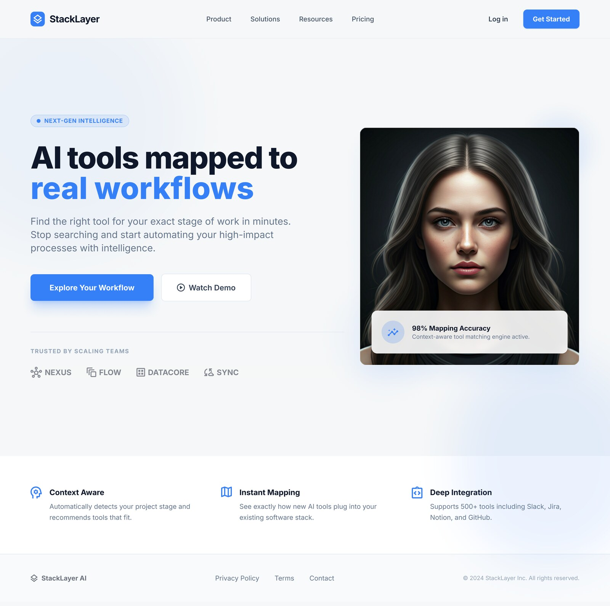
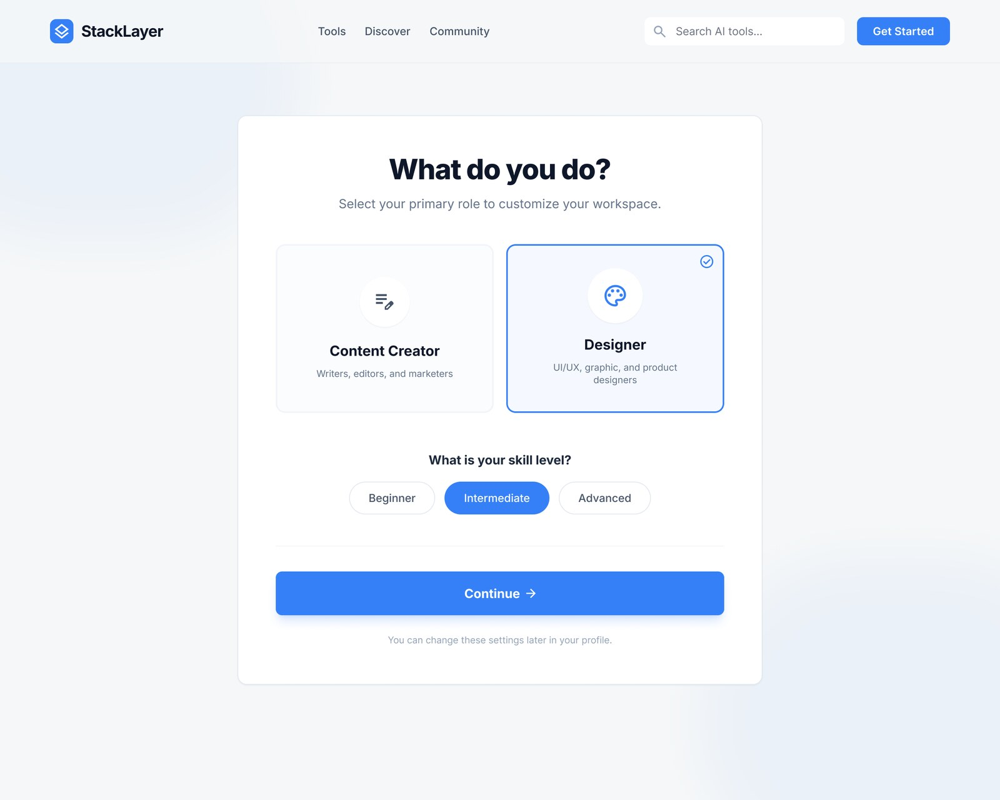
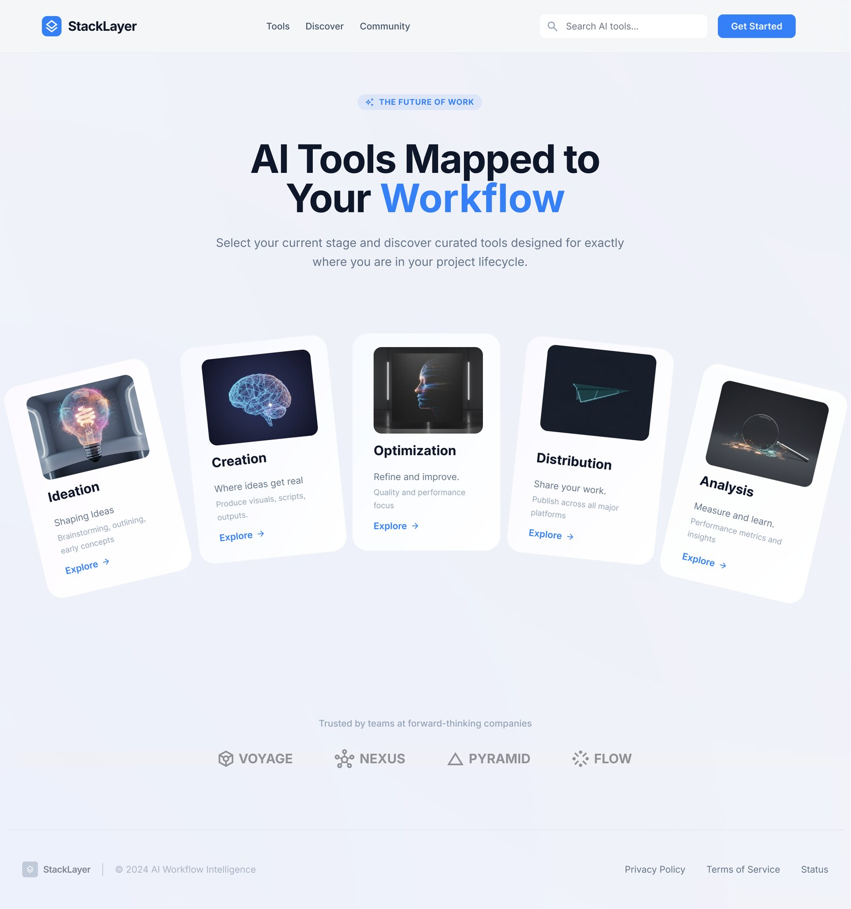
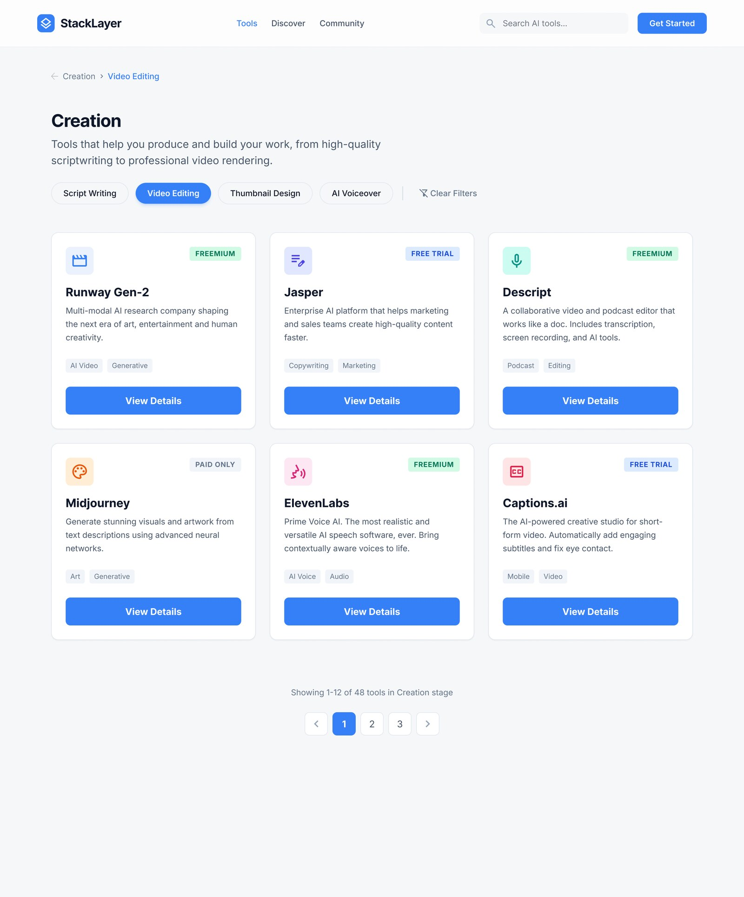
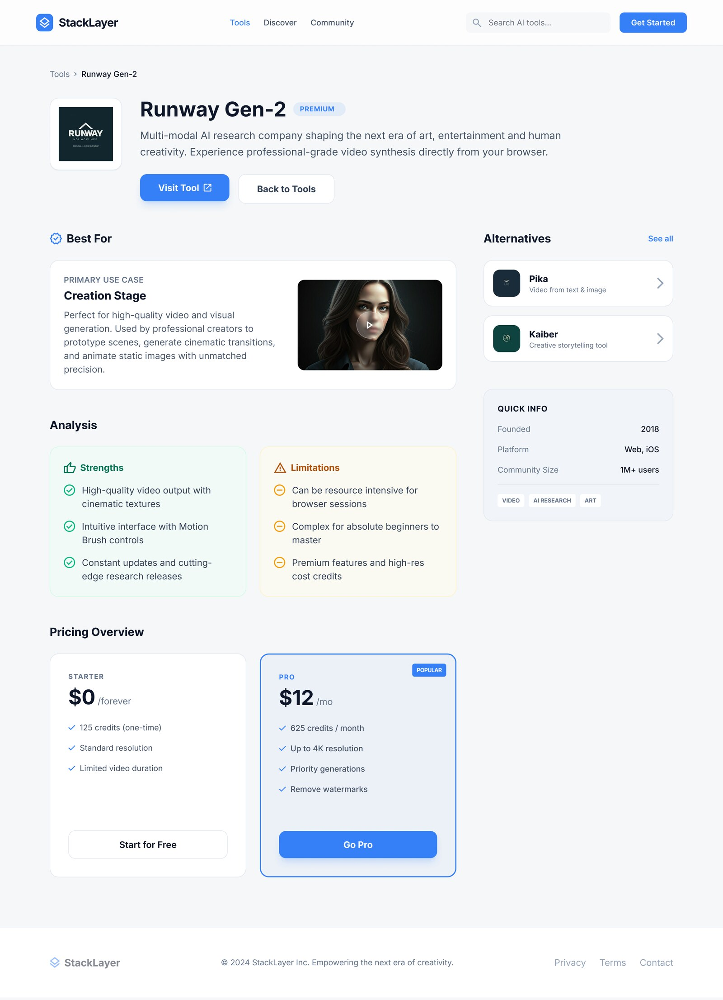
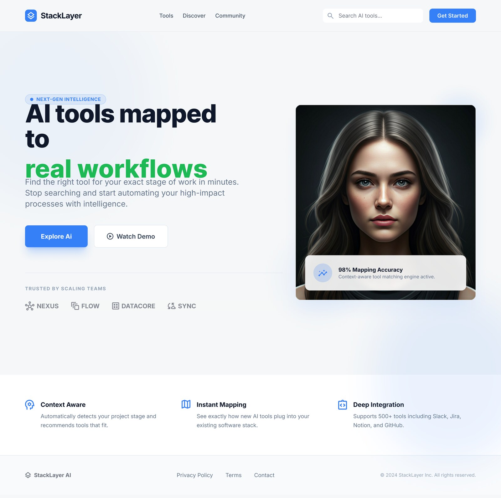

A guided discovery platform that helps designers, creators, accountants, and marketers find the right AI tools for each stage of their work — not just the trending ones.

Most people hear about new AI tools every day but don't know which ones are useful for their exact career, skill level, budget, and workflow stage. Stack Layer turns that noisy discovery process into a guided path.
A user selects what they do, chooses their experience level, explores workflow stages like ideation, creation, optimization, distribution, and analysis — then reviews tools with strengths, limits, alternatives, and pricing.
UX strategy, UI design, visual system
AI tool recommendation platform
Career-focused professionals and AI beginners
Clean, calm, modern, and trustworthy
Hundreds of tools across social media, search, and newsletters — but no useful way to compare them.
A tool may be powerful, but users need to know if it helps with research, writing, visual creation, editing, or analysis.
Pricing models, limitations, free trials, and credits are scattered across different sites.
The interface should feel like a smart guide, not a search engine.
The onboarding starts with the most important question: what do you do? Role selection paired with skill level makes recommendations feel tailored from the first action.

Workflow stages replace keyword searching. Users choose the moment they're in — ideation, creation, optimization — then see curated tools for that stage.



Tool cards show category tags, price signals, and short descriptions. Detail pages help with strengths, limitations, alternatives, and pricing plans.

Large headings, spacious sections, and readable cards — simple even when tool data is dense.
Labels like Free Trial, Freemium, Premium help people understand cost before opening a tool detail.
Quick info, platform details, community size, alternatives, and limitations reduce blind decision-making.
Tools organized by stage of work — not just category — so recommendations feel contextual.
Balancing support for multiple careers without making the first experience feel overloaded.
Showing enough information to make decisions without making cards too heavy to scan.
Users understand AI recommendations better when tied to specific tasks and workflow stages.
Add saved stacks for repeat workflows, comparison tables for similar tools, and more career roles.
I'm currently open to senior product design roles — fintech, AI-native, and mobile-first teams.
Get in touch